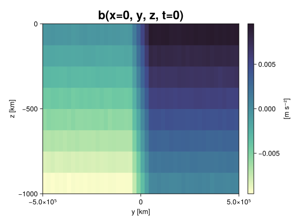
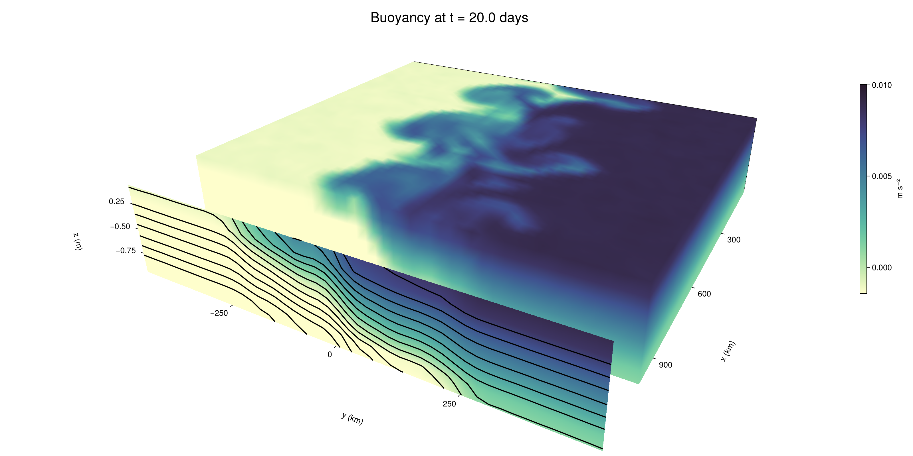

Baroclinic adjustment
In this example, we simulate the evolution and equilibration of a baroclinically unstable front.
Install dependencies
First let's make sure we have all required packages installed.
using Pkg
pkg"add Oceananigans, CairoMakie"using Oceananigans
using Oceananigans.UnitsGrid
We use a three-dimensional channel that is periodic in the x direction:
Lx = 1000kilometers # east-west extent [m]
Ly = 1000kilometers # north-south extent [m]
Lz = 1kilometers # depth [m]
grid = RectilinearGrid(size = (48, 48, 8),
x = (0, Lx),
y = (-Ly/2, Ly/2),
z = (-Lz, 0),
topology = (Periodic, Bounded, Bounded))48×48×8 RectilinearGrid{Float64, Periodic, Bounded, Bounded} on CPU with 3×3×3 halo
├── Periodic x ∈ [0.0, 1.0e6) regularly spaced with Δx=20833.3
├── Bounded y ∈ [-500000.0, 500000.0] regularly spaced with Δy=20833.3
└── Bounded z ∈ [-1000.0, 0.0] regularly spaced with Δz=125.0Model
We built a HydrostaticFreeSurfaceModel with an ImplicitFreeSurface solver. Regarding Coriolis, we use a beta-plane centered at 45° South.
model = HydrostaticFreeSurfaceModel(; grid,
coriolis = BetaPlane(latitude = -45),
buoyancy = BuoyancyTracer(),
tracers = :b,
momentum_advection = WENO(),
tracer_advection = WENO())HydrostaticFreeSurfaceModel{CPU, RectilinearGrid}(time = 0 seconds, iteration = 0)
├── grid: 48×48×8 RectilinearGrid{Float64, Periodic, Bounded, Bounded} on CPU with 3×3×3 halo
├── timestepper: QuasiAdamsBashforth2TimeStepper
├── tracers: b
├── closure: Nothing
├── buoyancy: BuoyancyTracer with ĝ = NegativeZDirection()
├── free surface: ImplicitFreeSurface with gravitational acceleration 9.80665 m s⁻²
│ └── solver: FFTImplicitFreeSurfaceSolver
├── advection scheme:
│ ├── momentum: WENO reconstruction order 5
│ └── b: WENO reconstruction order 5
└── coriolis: BetaPlane{Float64}We start our simulation from rest with a baroclinically unstable buoyancy distribution. We use ramp(y, Δy), defined below, to specify a front with width Δy and horizontal buoyancy gradient M². We impose the front on top of a vertical buoyancy gradient N² and a bit of noise.
"""
ramp(y, Δy)
Linear ramp from 0 to 1 between -Δy/2 and +Δy/2.
For example:
```
y < -Δy/2 => ramp = 0
-Δy/2 < y < -Δy/2 => ramp = y / Δy
y > Δy/2 => ramp = 1
```
"""
ramp(y, Δy) = min(max(0, y/Δy + 1/2), 1)
N² = 1e-5 # [s⁻²] buoyancy frequency / stratification
M² = 1e-7 # [s⁻²] horizontal buoyancy gradient
Δy = 100kilometers # width of the region of the front
Δb = Δy * M² # buoyancy jump associated with the front
ϵb = 1e-2 * Δb # noise amplitude
bᵢ(x, y, z) = N² * z + Δb * ramp(y, Δy) + ϵb * randn()
set!(model, b=bᵢ)Let's visualize the initial buoyancy distribution.
using CairoMakie
# Build coordinates with units of kilometers
x, y, z = 1e-3 .* nodes(grid, (Center(), Center(), Center()))
b = model.tracers.b
fig, ax, hm = heatmap(view(b, 1, :, :),
colormap = :deep,
axis = (xlabel = "y [km]",
ylabel = "z [km]",
title = "b(x=0, y, z, t=0)",
titlesize = 24))
Colorbar(fig[1, 2], hm, label = "[m s⁻²]")
fig
Simulation
Now let's build a Simulation.
simulation = Simulation(model, Δt=20minutes, stop_time=20days)Simulation of HydrostaticFreeSurfaceModel{CPU, RectilinearGrid}(time = 0 seconds, iteration = 0)
├── Next time step: 20 minutes
├── Elapsed wall time: 0 seconds
├── Wall time per iteration: NaN days
├── Stop time: 20 days
├── Stop iteration : Inf
├── Wall time limit: Inf
├── Callbacks: OrderedDict with 4 entries:
│ ├── stop_time_exceeded => Callback of stop_time_exceeded on IterationInterval(1)
│ ├── stop_iteration_exceeded => Callback of stop_iteration_exceeded on IterationInterval(1)
│ ├── wall_time_limit_exceeded => Callback of wall_time_limit_exceeded on IterationInterval(1)
│ └── nan_checker => Callback of NaNChecker for u on IterationInterval(100)
├── Output writers: OrderedDict with no entries
└── Diagnostics: OrderedDict with no entriesWe add a TimeStepWizard callback to adapt the simulation's time-step,
conjure_time_step_wizard!(simulation, IterationInterval(20), cfl=0.2, max_Δt=20minutes)Also, we add a callback to print a message about how the simulation is going,
using Printf
wall_clock = Ref(time_ns())
function print_progress(sim)
u, v, w = model.velocities
progress = 100 * (time(sim) / sim.stop_time)
elapsed = (time_ns() - wall_clock[]) / 1e9
@printf("[%05.2f%%] i: %d, t: %s, wall time: %s, max(u): (%6.3e, %6.3e, %6.3e) m/s, next Δt: %s\n",
progress, iteration(sim), prettytime(sim), prettytime(elapsed),
maximum(abs, u), maximum(abs, v), maximum(abs, w), prettytime(sim.Δt))
wall_clock[] = time_ns()
return nothing
end
add_callback!(simulation, print_progress, IterationInterval(100))Diagnostics/Output
Here, we save the buoyancy, $b$, at the edges of our domain as well as the zonal ($x$) average of buoyancy.
u, v, w = model.velocities
ζ = ∂x(v) - ∂y(u)
B = Average(b, dims=1)
U = Average(u, dims=1)
V = Average(v, dims=1)
filename = "baroclinic_adjustment"
save_fields_interval = 0.5day
slicers = (east = (grid.Nx, :, :),
north = (:, grid.Ny, :),
bottom = (:, :, 1),
top = (:, :, grid.Nz))
for side in keys(slicers)
indices = slicers[side]
simulation.output_writers[side] = JLD2OutputWriter(model, (; b, ζ);
filename = filename * "_$(side)_slice",
schedule = TimeInterval(save_fields_interval),
overwrite_existing = true,
indices)
end
simulation.output_writers[:zonal] = JLD2OutputWriter(model, (; b=B, u=U, v=V);
filename = filename * "_zonal_average",
schedule = TimeInterval(save_fields_interval),
overwrite_existing = true)JLD2OutputWriter scheduled on TimeInterval(12 hours):
├── filepath: ./baroclinic_adjustment_zonal_average.jld2
├── 3 outputs: (b, u, v)
├── array type: Array{Float64}
├── including: [:grid, :coriolis, :buoyancy, :closure]
├── file_splitting: NoFileSplitting
└── file size: 30.7 KiBNow we're ready to run.
@info "Running the simulation..."
run!(simulation)
@info "Simulation completed in " * prettytime(simulation.run_wall_time)[ Info: Running the simulation...
[ Info: Initializing simulation...
[00.00%] i: 0, t: 0 seconds, wall time: 21.336 seconds, max(u): (0.000e+00, 0.000e+00, 0.000e+00) m/s, next Δt: 20 minutes
[ Info: ... simulation initialization complete (22.982 seconds)
[ Info: Executing initial time step...
[ Info: ... initial time step complete (17.844 seconds).
[06.94%] i: 100, t: 1.389 days, wall time: 32.580 seconds, max(u): (1.281e-01, 1.164e-01, 1.522e-03) m/s, next Δt: 20 minutes
[13.89%] i: 200, t: 2.778 days, wall time: 910.089 ms, max(u): (2.154e-01, 1.780e-01, 1.827e-03) m/s, next Δt: 20 minutes
[20.83%] i: 300, t: 4.167 days, wall time: 931.787 ms, max(u): (2.819e-01, 2.560e-01, 1.753e-03) m/s, next Δt: 20 minutes
[27.78%] i: 400, t: 5.556 days, wall time: 899.787 ms, max(u): (3.532e-01, 3.332e-01, 1.722e-03) m/s, next Δt: 20 minutes
[34.72%] i: 500, t: 6.944 days, wall time: 789.593 ms, max(u): (4.422e-01, 4.393e-01, 1.885e-03) m/s, next Δt: 20 minutes
[41.67%] i: 600, t: 8.333 days, wall time: 968.956 ms, max(u): (5.852e-01, 6.551e-01, 2.086e-03) m/s, next Δt: 20 minutes
[48.61%] i: 700, t: 9.722 days, wall time: 1.119 seconds, max(u): (7.399e-01, 1.040e+00, 2.690e-03) m/s, next Δt: 20 minutes
[55.56%] i: 800, t: 11.111 days, wall time: 946.843 ms, max(u): (1.104e+00, 1.364e+00, 3.991e-03) m/s, next Δt: 20 minutes
[62.50%] i: 900, t: 12.500 days, wall time: 973.610 ms, max(u): (1.401e+00, 1.442e+00, 4.739e-03) m/s, next Δt: 20 minutes
[69.44%] i: 1000, t: 13.889 days, wall time: 970.946 ms, max(u): (1.484e+00, 1.335e+00, 4.550e-03) m/s, next Δt: 20 minutes
[76.39%] i: 1100, t: 15.278 days, wall time: 995.845 ms, max(u): (1.383e+00, 1.264e+00, 3.903e-03) m/s, next Δt: 20 minutes
[83.33%] i: 1200, t: 16.667 days, wall time: 936.194 ms, max(u): (1.533e+00, 1.282e+00, 3.514e-03) m/s, next Δt: 20 minutes
[90.28%] i: 1300, t: 18.056 days, wall time: 1.013 seconds, max(u): (1.689e+00, 1.443e+00, 4.123e-03) m/s, next Δt: 20 minutes
[97.22%] i: 1400, t: 19.444 days, wall time: 994.471 ms, max(u): (1.500e+00, 1.312e+00, 3.269e-03) m/s, next Δt: 20 minutes
[ Info: Simulation is stopping after running for 57.617 seconds.
[ Info: Simulation time 20 days equals or exceeds stop time 20 days.
[ Info: Simulation completed in 57.653 seconds
Visualization
All that's left is to make a pretty movie. Actually, we make two visualizations here. First, we illustrate how to make a 3D visualization with Makie's Axis3 and Makie.surface. Then we make a movie in 2D. We use CairoMakie in this example, but note that using GLMakie is more convenient on a system with OpenGL, as figures will be displayed on the screen.
using CairoMakieThree-dimensional visualization
We load the saved buoyancy output on the top, north, and east surface as FieldTimeSerieses.
filename = "baroclinic_adjustment"
sides = keys(slicers)
slice_filenames = NamedTuple(side => filename * "_$(side)_slice.jld2" for side in sides)
b_timeserieses = (east = FieldTimeSeries(slice_filenames.east, "b"),
north = FieldTimeSeries(slice_filenames.north, "b"),
top = FieldTimeSeries(slice_filenames.top, "b"))
B_timeseries = FieldTimeSeries(filename * "_zonal_average.jld2", "b")
times = B_timeseries.times
grid = B_timeseries.grid48×48×8 RectilinearGrid{Float64, Periodic, Bounded, Bounded} on CPU with 3×3×3 halo
├── Periodic x ∈ [0.0, 1.0e6) regularly spaced with Δx=20833.3
├── Bounded y ∈ [-500000.0, 500000.0] regularly spaced with Δy=20833.3
└── Bounded z ∈ [-1000.0, 0.0] regularly spaced with Δz=125.0We build the coordinates. We rescale horizontal coordinates to kilometers.
xb, yb, zb = nodes(b_timeserieses.east)
xb = xb ./ 1e3 # convert m -> km
yb = yb ./ 1e3 # convert m -> km
Nx, Ny, Nz = size(grid)
x_xz = repeat(x, 1, Nz)
y_xz_north = y[end] * ones(Nx, Nz)
z_xz = repeat(reshape(z, 1, Nz), Nx, 1)
x_yz_east = x[end] * ones(Ny, Nz)
y_yz = repeat(y, 1, Nz)
z_yz = repeat(reshape(z, 1, Nz), grid.Ny, 1)
x_xy = x
y_xy = y
z_xy_top = z[end] * ones(grid.Nx, grid.Ny)Then we create a 3D axis. We use zonal_slice_displacement to control where the plot of the instantaneous zonal average flow is located.
fig = Figure(size = (1600, 800))
zonal_slice_displacement = 1.2
ax = Axis3(fig[2, 1],
aspect=(1, 1, 1/5),
xlabel = "x (km)",
ylabel = "y (km)",
zlabel = "z (m)",
xlabeloffset = 100,
ylabeloffset = 100,
zlabeloffset = 100,
limits = ((x[1], zonal_slice_displacement * x[end]), (y[1], y[end]), (z[1], z[end])),
elevation = 0.45,
azimuth = 6.8,
xspinesvisible = false,
zgridvisible = false,
protrusions = 40,
perspectiveness = 0.7)Axis3()We use data from the final savepoint for the 3D plot. Note that this plot can easily be animated by using Makie's Observable. To dive into Observables, check out Makie.jl's Documentation.
n = length(times)41Now let's make a 3D plot of the buoyancy and in front of it we'll use the zonally-averaged output to plot the instantaneous zonal-average of the buoyancy.
b_slices = (east = interior(b_timeserieses.east[n], 1, :, :),
north = interior(b_timeserieses.north[n], :, 1, :),
top = interior(b_timeserieses.top[n], :, :, 1))
# Zonally-averaged buoyancy
B = interior(B_timeseries[n], 1, :, :)
clims = 1.1 .* extrema(b_timeserieses.top[n][:])
kwargs = (colorrange=clims, colormap=:deep, shading=NoShading)
surface!(ax, x_yz_east, y_yz, z_yz; color = b_slices.east, kwargs...)
surface!(ax, x_xz, y_xz_north, z_xz; color = b_slices.north, kwargs...)
surface!(ax, x_xy, y_xy, z_xy_top; color = b_slices.top, kwargs...)
sf = surface!(ax, zonal_slice_displacement .* x_yz_east, y_yz, z_yz; color = B, kwargs...)
contour!(ax, y, z, B; transformation = (:yz, zonal_slice_displacement * x[end]),
levels = 15, linewidth = 2, color = :black)
Colorbar(fig[2, 2], sf, label = "m s⁻²", height = Relative(0.4), tellheight=false)
title = "Buoyancy at t = " * string(round(times[n] / day, digits=1)) * " days"
fig[1, 1:2] = Label(fig, title; fontsize = 24, tellwidth = false, padding = (0, 0, -120, 0))
rowgap!(fig.layout, 1, Relative(-0.2))
colgap!(fig.layout, 1, Relative(-0.1))
save("baroclinic_adjustment_3d.png", fig)
Two-dimensional movie
We make a 2D movie that shows buoyancy $b$ and vertical vorticity $ζ$ at the surface, as well as the zonally-averaged zonal and meridional velocities $U$ and $V$ in the $(y, z)$ plane. First we load the FieldTimeSeries and extract the additional coordinates we'll need for plotting
ζ_timeseries = FieldTimeSeries(slice_filenames.top, "ζ")
U_timeseries = FieldTimeSeries(filename * "_zonal_average.jld2", "u")
B_timeseries = FieldTimeSeries(filename * "_zonal_average.jld2", "b")
V_timeseries = FieldTimeSeries(filename * "_zonal_average.jld2", "v")
xζ, yζ, zζ = nodes(ζ_timeseries)
yv = ynodes(V_timeseries)
xζ = xζ ./ 1e3 # convert m -> km
yζ = yζ ./ 1e3 # convert m -> km
yv = yv ./ 1e3 # convert m -> km49-element Vector{Float64}:
-500.0
-479.1666666666667
-458.3333333333333
-437.5
-416.6666666666667
-395.8333333333333
-375.0
-354.1666666666667
-333.3333333333333
-312.5
-291.6666666666667
-270.8333333333333
-250.0
-229.16666666666666
-208.33333333333334
-187.5
-166.66666666666666
-145.83333333333334
-125.0
-104.16666666666667
-83.33333333333333
-62.5
-41.666666666666664
-20.833333333333332
0.0
20.833333333333332
41.666666666666664
62.5
83.33333333333333
104.16666666666667
125.0
145.83333333333334
166.66666666666666
187.5
208.33333333333334
229.16666666666666
250.0
270.8333333333333
291.6666666666667
312.5
333.3333333333333
354.1666666666667
375.0
395.8333333333333
416.6666666666667
437.5
458.3333333333333
479.1666666666667
500.0Next, we set up a plot with 4 panels. The top panels are large and square, while the bottom panels get a reduced aspect ratio through rowsize!.
set_theme!(Theme(fontsize=24))
fig = Figure(size=(1800, 1000))
axb = Axis(fig[1, 2], xlabel="x (km)", ylabel="y (km)", aspect=1)
axζ = Axis(fig[1, 3], xlabel="x (km)", ylabel="y (km)", aspect=1, yaxisposition=:right)
axu = Axis(fig[2, 2], xlabel="y (km)", ylabel="z (m)")
axv = Axis(fig[2, 3], xlabel="y (km)", ylabel="z (m)", yaxisposition=:right)
rowsize!(fig.layout, 2, Relative(0.3))To prepare a plot for animation, we index the timeseries with an Observable,
n = Observable(1)
b_top = @lift interior(b_timeserieses.top[$n], :, :, 1)
ζ_top = @lift interior(ζ_timeseries[$n], :, :, 1)
U = @lift interior(U_timeseries[$n], 1, :, :)
V = @lift interior(V_timeseries[$n], 1, :, :)
B = @lift interior(B_timeseries[$n], 1, :, :)Observable([-0.009376287866451158 -0.008135977374923027 -0.0068878854339348644 -0.005621959383964792 -0.004383478365041878 -0.0031377835191378745 -0.0018745892764393552 -0.0006160174633653486; -0.00938327200956929 -0.008115548933325193 -0.006863902550061543 -0.005613978854923146 -0.004367573641632862 -0.003145543120627961 -0.0018824249016004453 -0.0006287392387025202; -0.009385928531080313 -0.008138749804163398 -0.006878272366938301 -0.005615675156467988 -0.004410250485484394 -0.003148262903170091 -0.0018872806257651871 -0.0006198497035036191; -0.009376462086046186 -0.008142042348284537 -0.006872931538411166 -0.005621466493595908 -0.004373259764903008 -0.0031127293435514324 -0.0018734539385964262 -0.0006232534696216114; -0.009376608147993707 -0.008150210688907948 -0.0068607428433489276 -0.005652512523077064 -0.004386939955517875 -0.003123829841041809 -0.001876563346615696 -0.0006327681089320069; -0.009359713221619895 -0.008126821073506992 -0.006876976942188108 -0.005640056665628075 -0.004380624904574341 -0.003114665568080778 -0.0018679468371528764 -0.000629614822084609; -0.009382941725343411 -0.008116184946135337 -0.006876251829719733 -0.005624630687663376 -0.004356686056785485 -0.0031354117533984095 -0.0018669877783942161 -0.0006278566785222511; -0.009370027361414967 -0.008118498013040558 -0.006885694530803031 -0.00563001029829447 -0.004379295980961574 -0.0031211960896790846 -0.0018640438874921981 -0.0006116934849227466; -0.009369538274329037 -0.008109677144398525 -0.006869561025691394 -0.005624791832204708 -0.004371641455549833 -0.0031388698486076727 -0.0018904948890396372 -0.0006095272005627605; -0.009362342996966163 -0.008126073028771528 -0.006873178990261628 -0.00561567313411403 -0.004371975142980554 -0.0031326199136433044 -0.0018856436202205357 -0.0006230713668880606; -0.009364342723925475 -0.008113800386347549 -0.006876045368205248 -0.005658922117771495 -0.004349492630798746 -0.003143183597112477 -0.0018671538817880125 -0.0006348722059349972; -0.009386681165158407 -0.008151161253776254 -0.006860168025281381 -0.005627986903299176 -0.004360345458709453 -0.0031386108697741507 -0.0018928053160370262 -0.0006348776856153853; -0.009382948677080921 -0.008124159096099067 -0.006835338220538028 -0.005637088152044938 -0.004404629868037043 -0.003115825470700105 -0.001869264477725622 -0.0006315011919744785; -0.009383538757739493 -0.008108097612231387 -0.0068735825423126 -0.005630717944340633 -0.0043788166271600875 -0.003124459948093234 -0.0018636475631009345 -0.0006195678568322213; -0.009368323032303645 -0.008109184620885578 -0.006891230720853163 -0.005632341814546499 -0.004395911539191091 -0.003125034930649006 -0.0018399823964977862 -0.0006594080174112628; -0.009382326923989949 -0.008135472936775604 -0.006858157934236747 -0.005589946193484217 -0.0043981322547938335 -0.0031501063352562843 -0.001876403472336035 -0.0006214145642840125; -0.009378508477590601 -0.008118128723061524 -0.006893219295329672 -0.0056235197174935 -0.004385378084871588 -0.0031115864162404344 -0.0018605681962038767 -0.0006324654340996023; -0.00937765566449784 -0.008114870101546568 -0.006899311272354231 -0.005600772393607283 -0.004411000381420426 -0.0030910577387953894 -0.0018841971217736008 -0.0006409407308718602; -0.009374332401808393 -0.008129746855106701 -0.006864578193815395 -0.005619100982973422 -0.004376926246119986 -0.0031212852965820125 -0.0018785075502899872 -0.0006315027956757375; -0.009380820864917249 -0.008106570171636884 -0.006886596067422267 -0.0056386512768276985 -0.004362317257604802 -0.0031420138889271137 -0.0018554201582980476 -0.0006106541300308319; -0.00937158973624227 -0.00812040960292647 -0.0068695256865111435 -0.005626106745156499 -0.00438614500498001 -0.0031266240290903084 -0.001863701629554888 -0.0006320988879643917; -0.00939163299266927 -0.008119915271016387 -0.006885261941542022 -0.005621690470861068 -0.0044005881399141545 -0.003148986741777727 -0.0018551488254682864 -0.000638326220898234; -0.0075091336097755585 -0.0062607101907511025 -0.004987397798865172 -0.003744784693069271 -0.0025100520811356854 -0.0012575192707562947 -1.3712596165335141e-5 0.0012662316080450044; -0.005405496948396282 -0.0041574822860476575 -0.002928900930290688 -0.001672131397723588 -0.00041556488470410516 0.0008477004802793605 0.0020818632601400694 0.0033519322987806293; -0.003332550998813639 -0.0020827297556532368 -0.0008091823233173307 0.00042988742184341296 0.0016884737365128867 0.002912649509034185 0.004170122146849582 0.00540396111666496; -0.0012634507383313023 -1.559616149610527e-5 0.0012444431951386277 0.0024808490444915175 0.0037438889324857296 0.005001113509093855 0.006246038944054871 0.007496963291034923; 0.0006665671377111768 0.0018509459570279928 0.0031239865251442636 0.004380094238612822 0.005643511155265338 0.0068903582155463 0.008153209035762351 0.009373708561167053; 0.0006419098351996919 0.0018933771564233232 0.0031158497038551204 0.0043770115393186055 0.005629431705273513 0.0068709569338417835 0.008132867021942186 0.009361898105620893; 0.0006226661593045799 0.0018774881873431203 0.0031042293383166755 0.00438183669679544 0.005637175686558774 0.006859428200924993 0.008112609443984968 0.00936563856354637; 0.0006016869411631235 0.0018669483182893066 0.0031076416833398183 0.004389172502275812 0.00562469172475519 0.006848540918452481 0.008140463089073754 0.009383612768856773; 0.0005935360844933668 0.0018919532940689092 0.0031173573564530605 0.004377625908529665 0.005628549806737097 0.0068696190427515015 0.0081239529568262 0.009382885520057506; 0.0005938705432705825 0.0018790981272146052 0.0031260335849205866 0.004377834434596348 0.005655128112011069 0.006874893662608847 0.008130766131201833 0.009367629878616023; 0.0006372738875700799 0.0018616885770416907 0.003130486724058806 0.004362879749864437 0.0056297697257828155 0.006878621432285726 0.008163554099138519 0.009382546309988691; 0.0006057379356173096 0.0018718041179711686 0.0031171336635220774 0.004353712071476878 0.005621716612928697 0.006877899190925164 0.008131420763464495 0.009355003065382795; 0.0006331986624233872 0.0018941433388558503 0.0031090500000873975 0.004400281094243453 0.005646938984676875 0.0068789809855390426 0.008126961816201062 0.009369762237391985; 0.0006164556728062083 0.0018718575805739945 0.003129799014914275 0.004366312578620577 0.005633024449474712 0.006875720132347385 0.008127633683045195 0.00938813052422414; 0.0006212193728542752 0.0018860354337144607 0.003132938836939736 0.0043836156054308266 0.0056331368465081895 0.006893722805565932 0.008123835536346413 0.009386516947553653; 0.0006448171324267348 0.0018873342243962657 0.003146084979776592 0.004390393241140555 0.005602633831401026 0.006878253712352545 0.008106997961609288 0.009347004036032358; 0.0006373911158045097 0.0018990042841298238 0.00310884728392408 0.004388757337821716 0.005651174217253553 0.006843419254489517 0.008123565685752236 0.009378573846201102; 0.000602934909056962 0.0018867606103985125 0.0031283686543514704 0.004392315752942524 0.0056181670663811535 0.00687621063466656 0.008096047264952241 0.009373443268910792; 0.0006509670222215923 0.0018441128860123114 0.003122516064770927 0.004376794509639157 0.00560944772537129 0.006857522241561164 0.008144460267430225 0.009405005170727516; 0.000632533903720304 0.0018519194850503266 0.0030992504607242053 0.004362254101384443 0.0056208307836336305 0.006893710177468079 0.008128235307772676 0.009359050653160237; 0.000640787193062438 0.0018730140204687078 0.003119618552179397 0.004403183539876149 0.0056197895650860535 0.006879755344326134 0.008136232694681429 0.00936076505568194; 0.0006382863681748806 0.001863801995675201 0.0031267283631365764 0.0043755291031373445 0.005636765758178036 0.006881262091587321 0.008154904468801025 0.009397797935988899; 0.0006282141373678715 0.0018384578445982533 0.003138092893389071 0.0043445366420670345 0.005631921732334647 0.006866389854200784 0.008150245390036349 0.009387745079323223; 0.000625885930309822 0.0018744427824120217 0.003115160019423632 0.0043813590879299555 0.005623997143016785 0.0068674602540141376 0.008102039778521279 0.009367885442359803; 0.0006222729525867498 0.001901481047441285 0.00312762042039326 0.004375763458815534 0.005612079758178981 0.0068906242582413915 0.008103678455407546 0.009378773664365184; 0.0006333576138676627 0.00186497229094036 0.0031043736892199894 0.004389651596221486 0.005621781881481047 0.006882206882318676 0.008129231483283785 0.009372975447085997])
and then build our plot:
hm = heatmap!(axb, xb, yb, b_top, colorrange=(0, Δb), colormap=:thermal)
Colorbar(fig[1, 1], hm, flipaxis=false, label="Surface b(x, y) (m s⁻²)")
hm = heatmap!(axζ, xζ, yζ, ζ_top, colorrange=(-5e-5, 5e-5), colormap=:balance)
Colorbar(fig[1, 4], hm, label="Surface ζ(x, y) (s⁻¹)")
hm = heatmap!(axu, yb, zb, U; colorrange=(-5e-1, 5e-1), colormap=:balance)
Colorbar(fig[2, 1], hm, flipaxis=false, label="Zonally-averaged U(y, z) (m s⁻¹)")
contour!(axu, yb, zb, B; levels=15, color=:black)
hm = heatmap!(axv, yv, zb, V; colorrange=(-1e-1, 1e-1), colormap=:balance)
Colorbar(fig[2, 4], hm, label="Zonally-averaged V(y, z) (m s⁻¹)")
contour!(axv, yb, zb, B; levels=15, color=:black)Finally, we're ready to record the movie.
frames = 1:length(times)
record(fig, filename * ".mp4", frames, framerate=8) do i
n[] = i
endThis page was generated using Literate.jl.